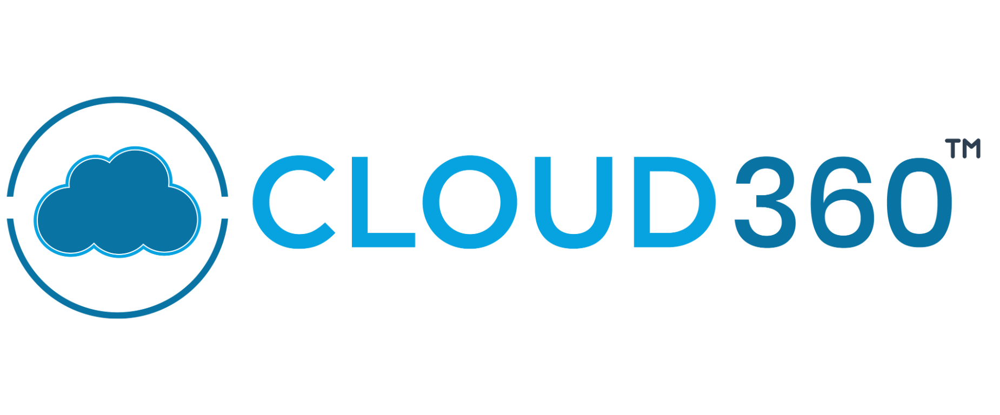

Secure score i
68%
↑ 4 pts this monthBased on 24 assessed controls

Defender for CloudINTERACTIVE TRAINING LAB SIMULATED ENVIRONMENTTake the controls in a realistic, fictional security console. Explore posture, find a hybrid server recommendation, remediate it, and verify the change — no Azure account needed.
A unified view of your cloud security posture across the organization.
Track control health and focus remediation where it matters most.
Organization score over the last 6 months
Compliance across enabled standards
Address high-impact issues to improve your security posture.
All resources, scores, and actions are fictional. Try the remediation workflow to see how prioritization and bulk fixes work.
Prioritized security actions across your cloud environment.
Understand how cloud controls map to industry standards.
Defender for Cloud continuously evaluates resources against the requirements in each enabled standard. Unhealthy assessments link to recommendations that help you improve compliance. A single recommendation may support multiple controls or standards.
Sample of 18 fictional resources from 44 assets across three subscriptions and a hybrid estate.